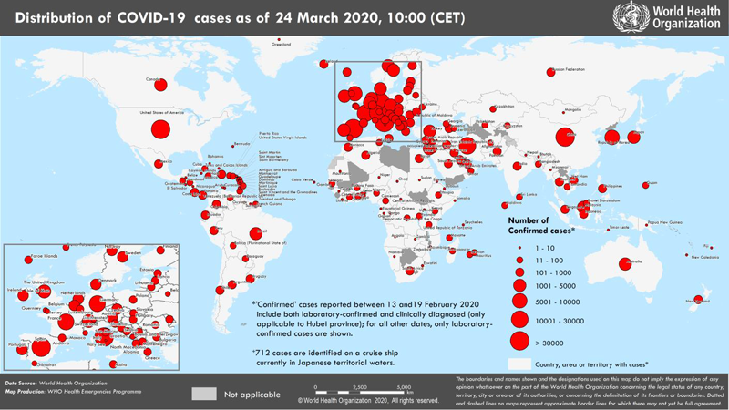

Текущая ситуация с коронавирусом Covid-19: информация ВОЗ от 24.03.2020
Date: 2020-03-25 02:27:05
Topic: Инфекционные заболевания, клиника, диагностика и лечение
На сайте ВОЗ размещены данные на 24.03.2020 о распространении в мире инфекции, вызванной коронавирусом Covid-19 (SARS-CoV-2). Всего в мире на 24.03.2020 зарегистрировано 372757 подтверждённых случаев заболевания.
На сайте ВОЗ размещены данные на 24.03.2020 о распространении в мире инфекции, вызванной коронавирусом Covid-19 (SARS-CoV-2).
- Всего в мире зарегистрировано 372757 подтверждённых случаев заболевания коронавирусом Covid-19.
- Из подтверждённых зарегистрированных случаев 81747 были зарегистрированы в Китае.
- Зарегистрировано 16231 летальных исходов (всего в мире), из них 3283 — в Китае, 6077 — в Италии, 1812 — в Иране, 2182 — в Испании, 860 — во Франции, 471 — в США.
- 291010 подтверждённых случаев заболевания были зарегистрированы за пределами Китая, в том числе 438 случаев в России, 81 случай в Республике Беларусь, 84 случая в Украине (рис. 1).
- Неблагоприятная ситуация по коронавирусу складывается в Италии, где уже зарегистрировано 63927 случаев заболевания, в Иране (23049), в Испании (33089), в Германии (29212), во Франции (19615), в США (42164).
Рис. 1. Распространение нового коронавируса Covid-19: страны и территории с подтверждёнными случаями на 24.03.2020 г.

По данным из ArcGIS число заражённых на текущий момент 417698 (495 в России), из них 18614 летальных случаев (1 в России), число выздоровевших 107823.
Другие источники
Другие новости
This article comes from Антибиотики и антимикробная терапия
http://antibiotic.ru/
The URL for this story is: http://antibiotic.ru/index.php?article=2945 |
|
|